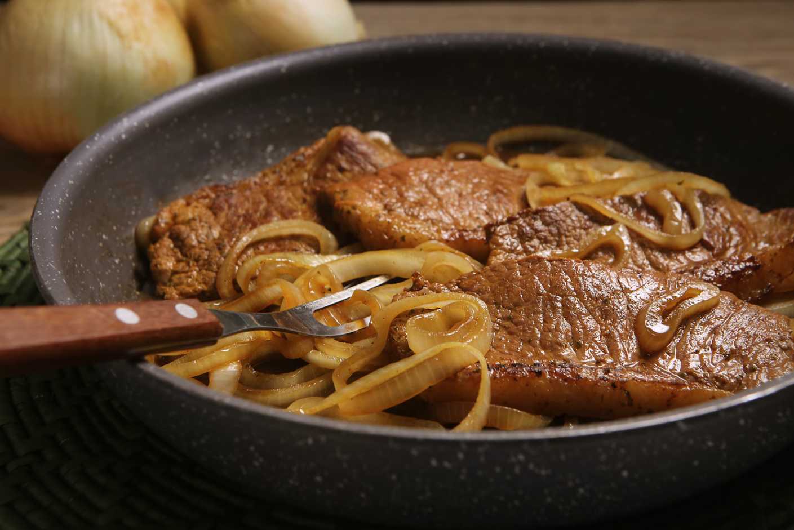

Bife Acebolado
O bife acebolado é campeão de audiência para acompanhar o pê-efe. Apesar de simples, a receita tem o passo a passo com técnica explicadinha para o bife não ficar duro nem ressecado, e a cebola ficar dourada e macia.